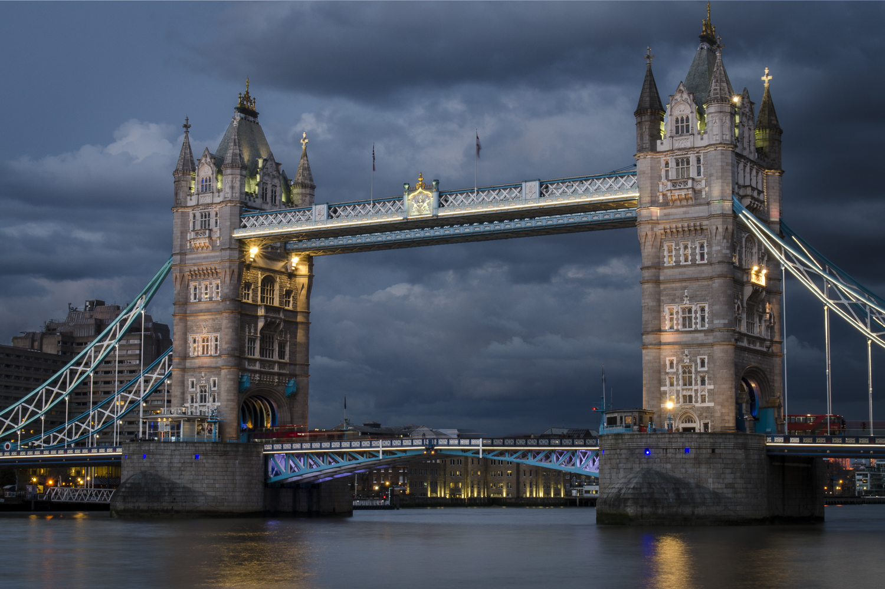
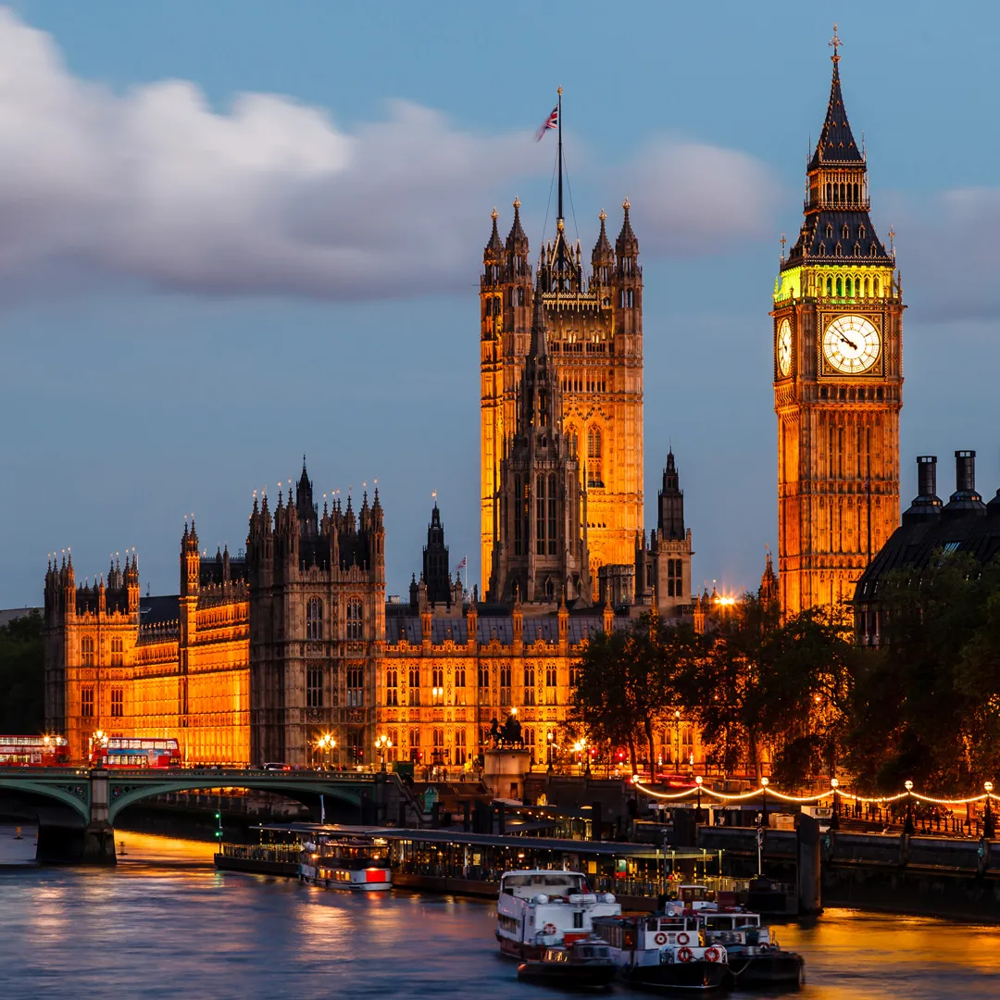
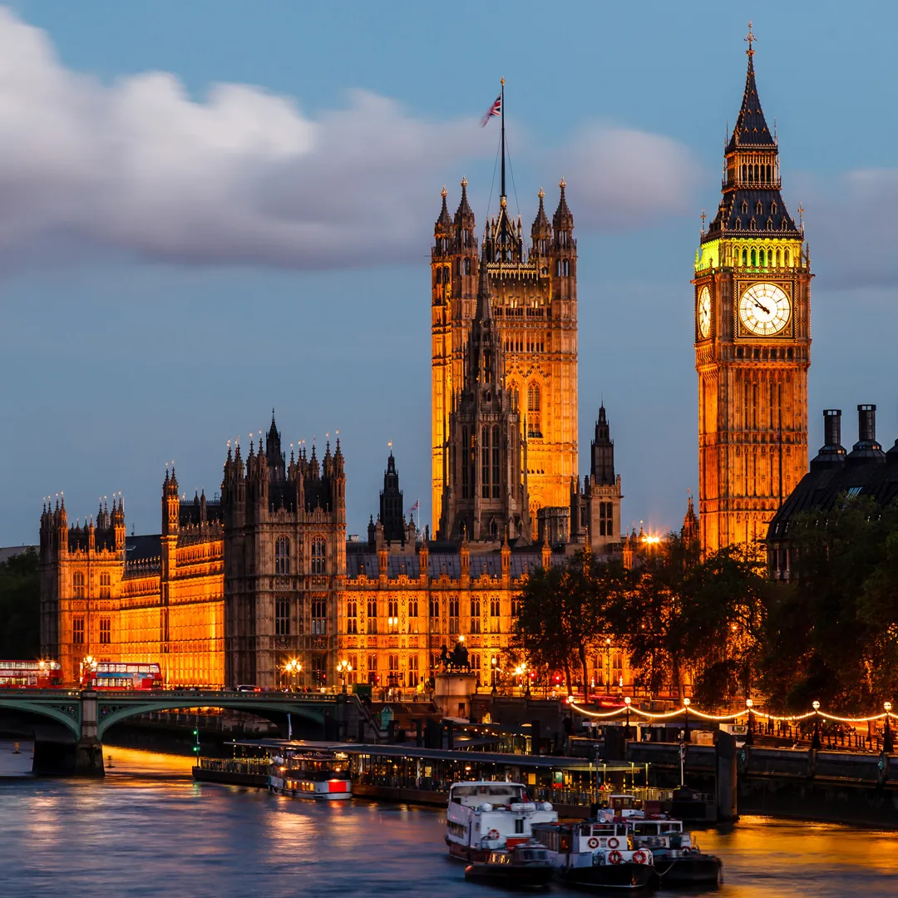

Travel
London Tower Bridge
London Bridge is a historic and iconic bridge located over the River Thames in London, England. The current bridge, which opened to traffic in 1973, is a box girder bridge built from concrete and steel.
It replaced a 19th-century stone-arched bridge, which in turn superseded a 600-year-old stone-built medieval structure. Prior to these, there had been several timber bridges in the same location since the Roman period.
Photo Gallery
 

Likes
- London Night
- London Morning